被两大沙漠夹击的绿洲孤岛，民勤人用七十年、380 公里绿色锁边，在沙海中种出大地“勤天”的生态答卷。
这是几代人在沙海中用手掌、用草方格、用一棵棵梭梭树拼出来的绿色长城 — 一个关于信念、汗水与重生的数据故事。
这是一段被无数次回看的影像：荒漠中的孤岛、翻滚的沙墙、还有新闻联播里那句沉重的播报。所有的故事，都从这片被两大沙漠夹击的土地开始。
一个曾被美国国家地理杂志预言成为第二个罗布泊的地方历经70余年接续奋斗，在2025年、甘肃民勤传来一则振奋人心的消息，总长380公里的环绿洲锁边林带实现全链条闭环围合，为这片被两大沙漠夹击的"沙漠孤岛"构筑起完整的生态屏障。
而就在一年前，综艺《种地吧》中"十个勤天"少年团赴民勤种下18万棵梭梭树的行动意外引爆了一场跨越山海的青年治沙热潮，让这片沉寂的沙海迎来了前所未有的关注与参与70年的坚守遇上青春的接力，民勤治沙正在书写一份属于中国的"大地答卷"
从这里出发，跟随数据的脚步，看一代代民勤人如何把不可能变成可能 →
甘肃武威以北，河西走廊东端。三面环沙，一片孤城。
民勤被巴丹吉林与腾格里两大沙漠合围，绿洲仅占全县面积的 9.66%，却承载了 16.95 万人的生息。
民勤县 1.58 万 km² 的土地，被沙漠和绿洲瓜分。点击饼图查看详细解读。
一条公路，连接起绿洲与外界的全部联系 — 点击途经节点查看详情
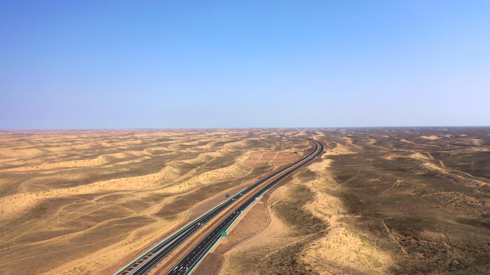
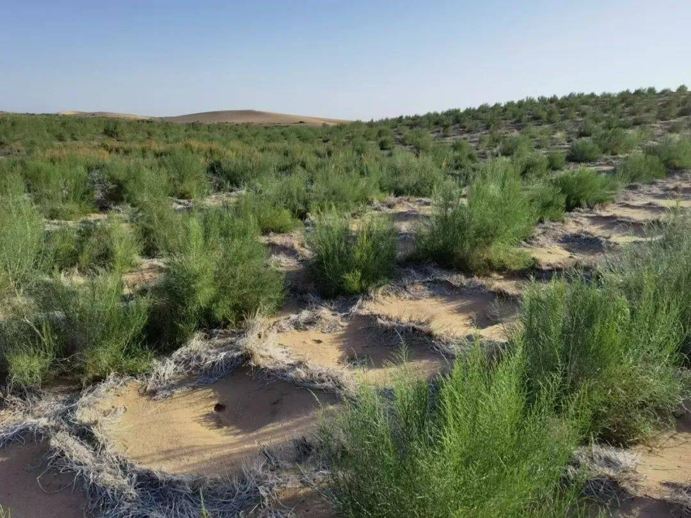
从年均 30-37 天到仅 10 天。点击坐标圆点查看逐年变化。
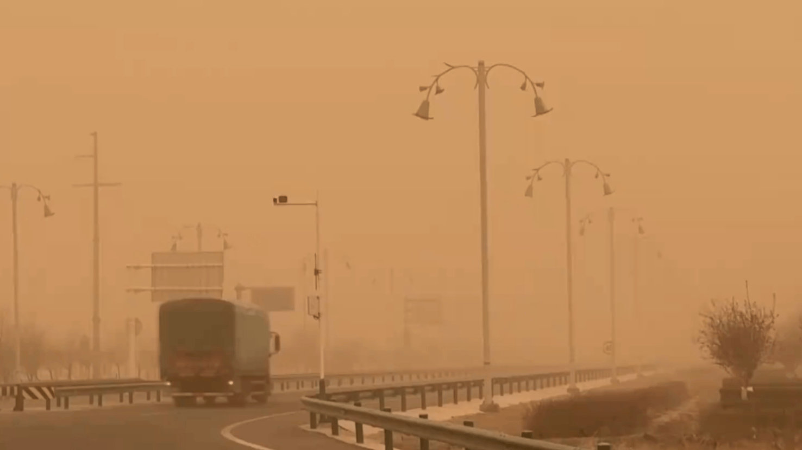
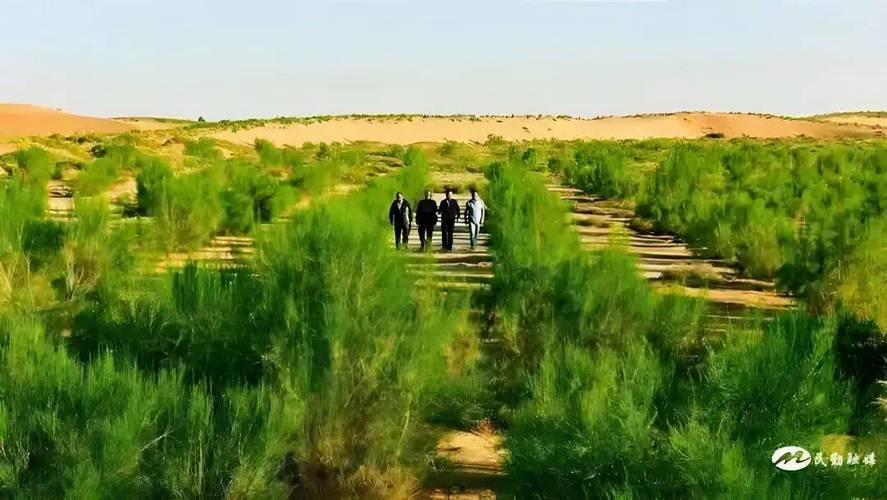
一个脚印的一生 — 风沙只需不到 3 分钟就能抹平一切痕迹。
民勤年均风速达 6 m/s 以上，大风一起，流沙如浪潮般向前推进，所到之处庄稼被连根拔起。
治理前，民勤年均沙尘暴天数高达 30–37 天。天昏地暗、飞沙走石，出门便是生死考验。
正是这 2 分 49 秒，让民勤人下定决心：扎下草方格、种上梭梭林，用一代代人的双手把风沙挡住。
40 年间，绿洲面积缩减 18%。村庄被掩埋、村民被迫背井离乡。点击数字查看详情。
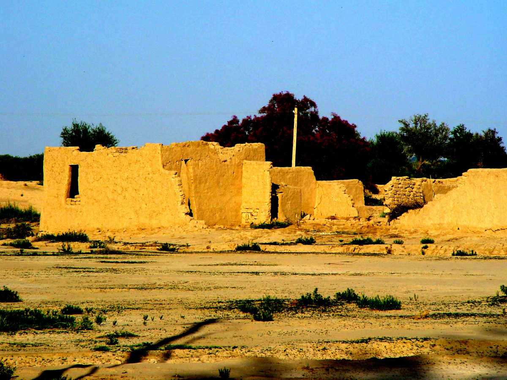
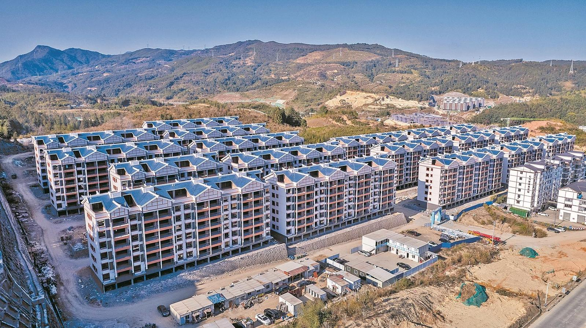
90.34% 是沙漠，9.66% 是绿洲。民勤人就是在这一寸绿意上，建起了自己的家。
村民的双手 + 政府的支持下，70 年治沙接力，从一棵草到一片林。
这是一场没有终点的事业：每一代人扎下草方格，都是在替后人多争一寸绿洲。
在民勤，治沙不是口号，而是几代人流血流汗的日常。从 1950 年代第一批民兵林场开始，民勤人就学会了在沙漠边缘种树。家家户户扎草方格，用麦草秸秆锁住流动的沙丘 — 这是祖辈传下来的手艺。
进入 21 世纪，年轻人摸索出梭梭接种肉苁蓉的路子，一棵梭梭树下能收获价值千元的肉苁蓉，治沙与增收从此不再矛盾。合作社治沙、返乡种树、互联网认领蚂蚁森林 — 每一个新尝试，都在拓宽治沙的边界。
没有政府主导的工程与资金投入，民勤的故事不会走到今天。1950 年首个治沙民兵林场获政府批复建立；1981 年三北防护林工程启动，民勤被国家列为重点建设区域，数十年来累计投入中央和省级治沙专项资金超过 50 亿元。
2007 年是转折点 — 石羊河流域重点治理规划获批，关井压田、跨流域调水、生态移民，一系列铁腕举措让下游年供水从 0.1 亿 m³ 跃升至 2.6 亿 m³。2017 年社会化治沙启动，蚂蚁森林等互联网项目落地民勤。
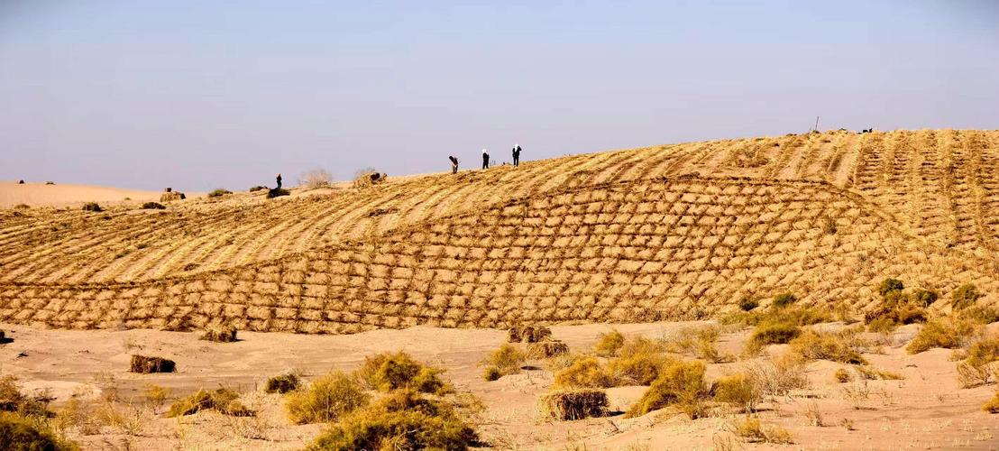
拖动滑块，同一片土地四十年前后的大变样。
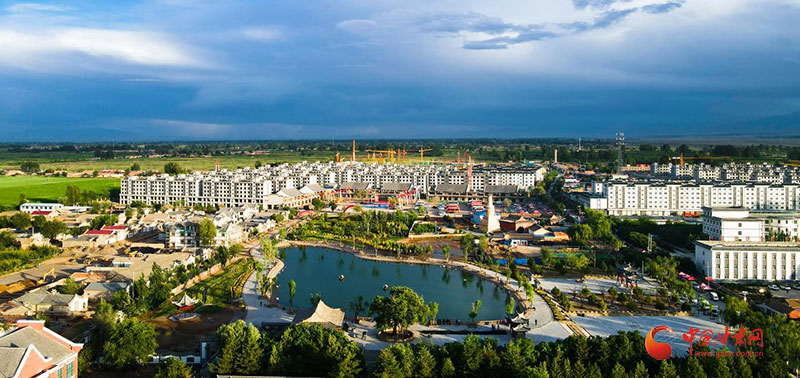
七十年绿色长征的答卷。点击折线节点查看详情。
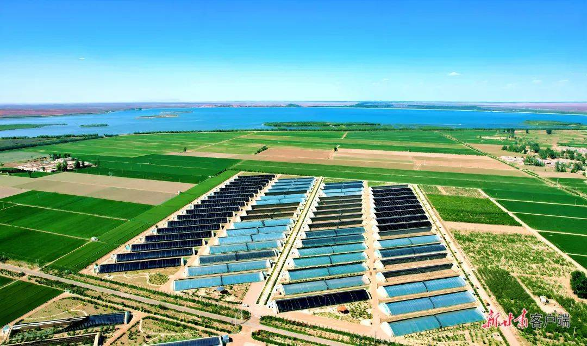
生态改善带来局地小气候转好。点击柱形查看逐年解读。
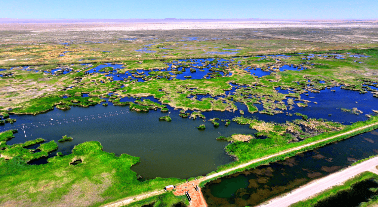
七十年接续奋斗，四个阶段、八段里程碑。点击左侧节点，右侧路径图高亮对应位置。
从 3% 到 18.28%，70 年间翻了 6 倍。
从 3% 到 18.28%，民勤人用 70 年让森林覆盖率翻了 6 倍，荒漠化趋势被彻底逆转。
从 2300 到 5 万+，一场全民治沙的热潮。
当综艺节目遇上荒漠，当年轻人拿起铁锹，治沙不再是老一代人的沉重使命，而成为一场跨越千里的温暖奔赴。
十个年轻人，用直播与短视频把民勤蜜瓜卖向全国，也让种树成为年轻人的新潮流
2023 到 2026，参与人数增长 20 余倍。点击柱形查看逐年解读。
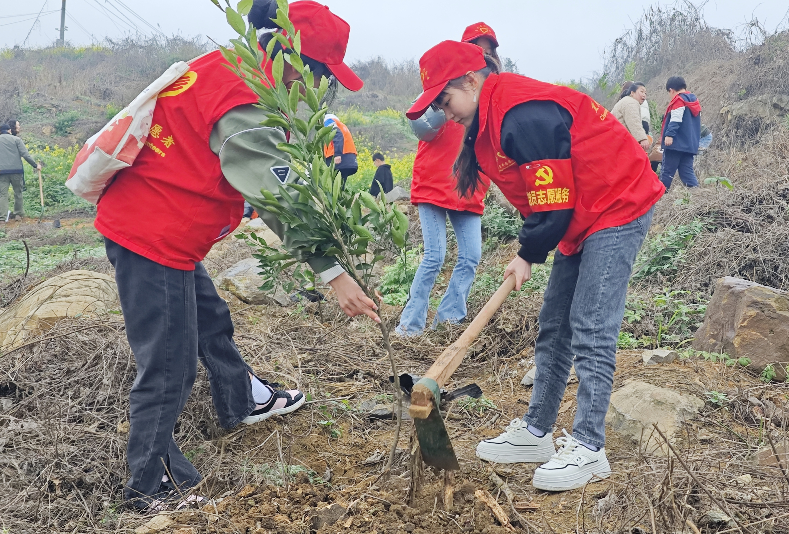
三年时间，民勤新增了什么？点击每组数字查看具体成果。
十个勤天在沙漠现场开展公益直播，售卖民勤人参果，零佣金全部给到农户。
2024-2026 三年井喷，绿色名片带来旅游经济大爆发。点击数字查看详情。
三年扎根沙海，每年新增 380 个足球场大小的绿地。
三年时间，152 万株苗木在民勤沙海扎根，相当于每年新增 380 个足球场大小的绿地。
沙中种出绿色经济，荒原结出致富果实。
民勤人种下的每一棵树，都是一份写给未来的礼物 — 关于丰收、关于希望、关于在绝望之地创造生机的勇气。
沙质土壤、巨大昼夜温差与充足日照，让民勤成为四座"之乡"的产地。种出来的不只是果实，更是沙区致富的希望。
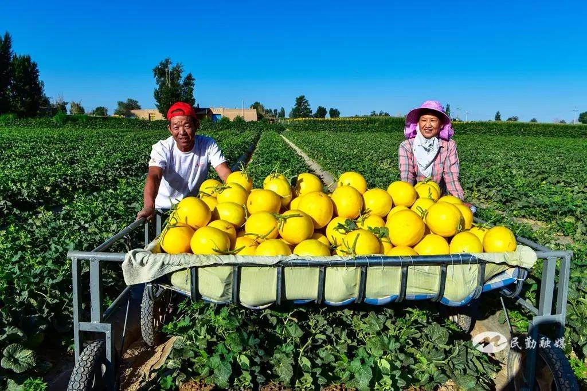
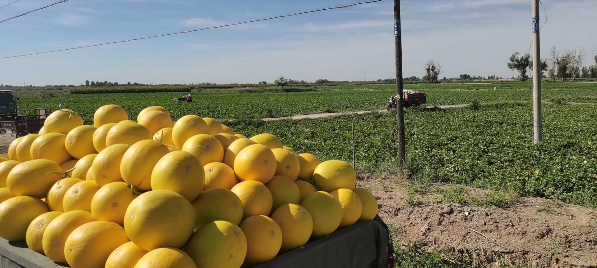
从治沙到致富，民勤用绿色经济证明：沙漠也能长出 GDP。点击数字查看详情。
从一棵梭梭到万亩林海，从漫天黄沙到瓜果飘香。民勤人用 70 年证明：种树，是沙漠给人类最好的礼物；而坚持，是人类给沙漠最好的回答。
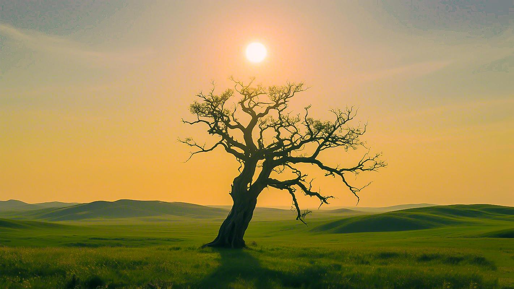